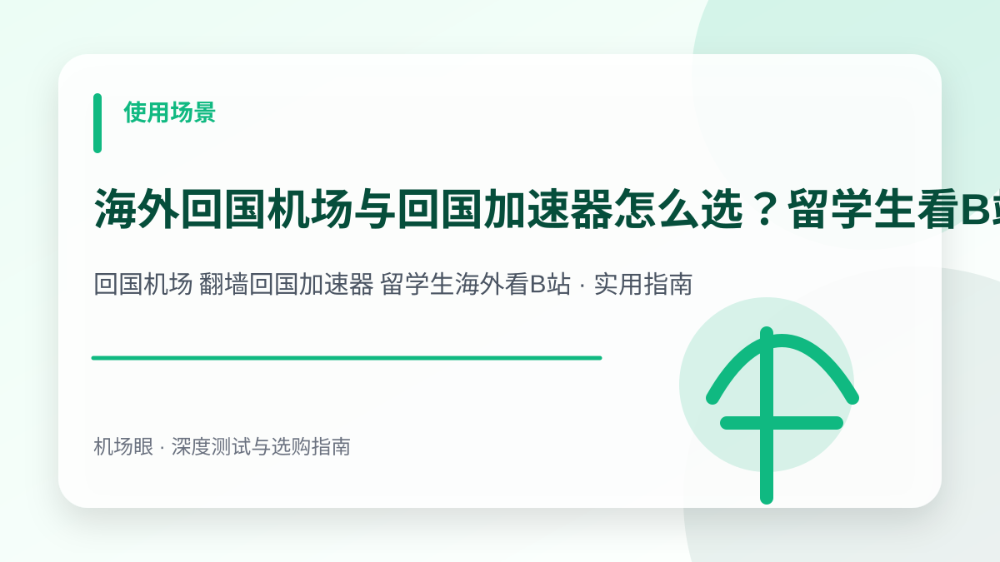

使用场景 · 2026-10-14
海外回国机场与回国加速器怎么选？留学生看B站腾讯视频与网易云音乐解锁指南
海外回国机场与回国加速器怎么选？留学生看B站腾讯视频与网易云音乐解锁指南。针对回国机场 翻墙回国加速器 留学生海外看B站提供深度选购与排障实战手册，涵盖架构对比、配置方案、避坑清单与故障排查技巧。
搜索“回国机场 翻墙回国加速器 留学生海外看B站”时，真正需要解决的不是单纯寻找一个服务名称，而是建立一套从网络底层逻辑、成本模型、安全风控到实战配置的完整决策体系。本文面向身在港澳台、欧美日韩及东南亚的留学生、海外华人、驻外务工与差旅人员，为你深度拆解核心技术原理与实测避坑指南。
先给结论：选购与排障的核心要点
海外回国属于反向代理（Reverse Proxy），核心技术在于将境外请求通过大陆高防机房或原生家庭宽带中转，破解地理版权围栏；选购关键在于配置‘仅国内流量走回国节点’的智能分流规则，严防海外本地流量绕行导致全网卡顿。在实际网络环境中，任何节点的表现都会受到本地运营商网络、骨干网互联质量、客户端协议栈实现以及目标平台风控规则的综合制约。因此，不要盲从网上的单一测速截图，必须结合自身使用场景进行针对性验证。
为什么这个话题在 2026 年成为热搜刚需
国内大多数网民习惯了‘出海翻墙’，但数以千万计的海外华人与留学生每天都在面对‘反向回国’的刚需。打开 B 站提示‘非常抱歉，根据版权方要求，您所在的地区无法观看’；打开网易云音乐半张歌单灰掉；登录王者荣耀国服延迟高达 300ms；甚至连国内招行、工行 App 登录都会触发境外异常风控。由于普通机场只有‘出海出口’而没有‘大陆境内落地’，留学生必须懂得如何挑选合规回国加速方案与智能路由配置。
典型应用场景与决策依据
例如一位在英国伦敦留学的学生，晚上想追腾讯视频独播剧并和国内朋友开黑打王者荣耀。若使用普通回国 App，全手机流量被强制引回国内，导致打开 Google Scholar 和 WhatsApp 变得奇慢无比；而在 Clash 中导入回国专属节点，并配置 GEOIP,CN 智能分流规则，即可实现国内应用 4K 秒开、游戏 60ms 低延迟，而本地搜索和社交软件继续走英国本地直连，体验完美无缝。
常见海外回国方案深度横向测评
| 方案类型 | 代表产品 / 实现方式 | 流媒体/音乐解锁率 | 本地海外应用影响 | 综合推荐指数 |
|---|---|---|---|---|
| 回国专属机场节点 | Clash/Sing-box 导入中国大陆节点 | 99% (原生家庭/BGP落地) | 零影响 (基于规则自动分流) | ★★★★★ (编辑首推) |
| 傻瓜式回国 App | 穿梭、Malus、快帆等专有客户端 | 85% ~ 90% (常见平台全包) | 容易导致本地海外网站变慢 | ★★★★☆ (适合纯小白) |
| 国内家宽自建 VPN | 国内家中软路由配置 WireGuard | 100% (纯家宽最高信誉) | 配置复杂，依赖家中上行带宽 | ★★★☆☆ (适合极客) |
| 公共免费代理 | 网络抓取的免费 HTTP/SOCKS 代理 | 低于 20% (严重被风控) | 极度危险，账号密码易泄露 | ★☆☆☆☆ (坚决远离) |
如何配置 Clash 实现“海外直连 + 国内精准回流”
配置回国代理的核心痛点是“流量污染”——一旦回国节点开启全局模式，你在海外打开 YouTube、Google、Netflix 都会绕道中国大陆机房，既慢又浪费昂贵的跨境流量。通过以下规则配置可完美解决：
# 海外留学生回国智能分流配置逻辑 (Clash)
proxy-groups:
- name: "🇨🇳 回国流媒体"
type: select
proxies:
- "上海 BGP 回国专线"
- "广州 BGP 回国专线"
- "DIRECT"
rules:
# 国内主流流媒体与版权域名走回国代理
- DOMAIN-SUFFIX,bilibili.com,🇨🇳 回国流媒体
- DOMAIN-SUFFIX,biliapi.net,🇨🇳 回国流媒体
- DOMAIN-SUFFIX,v.qq.com,🇨🇳 回国流媒体
- DOMAIN-SUFFIX,iqiyi.com,🇨🇳 回国流媒体
- DOMAIN-SUFFIX,music.163.com,🇨🇳 回国流媒体
- DOMAIN-SUFFIX,qqmusic.qq.com,🇨🇳 回国流媒体
- DOMAIN-KEYWORD,youku,🇨🇳 回国流媒体
# 中国大陆 IP 走回国代理
- GEOIP,CN,🇨🇳 回国流媒体
# 其余所有海外网站与应用一律走本地直连
- MATCH,DIRECT按照上述规则配置后，访问任何海外本地服务完全不消耗代理流量，只有打开 Bilibili、爱优腾和网易云音乐时才会自动经由国内专线节点中转，完美秒开 4K 蓝光画质与原声高品质音乐。
选购与实测需要关注的四个核心指标
- 节点落地必须属于中国大陆（上海、广州、北京等）原生机房或优质 BGP 线路
- 必须具备成熟的分流规则支持（分流中国大陆 GEOIP 与主流版权域名）
- 晚高峰跨境丢包率需控制在 1% 以内，避免视频中途反复缓冲
- 官方客户端或通用订阅不应强行拦截修改本地系统 DNS 导致本地网站打不开
推荐的标准化实操流程
- 先在本地测速，确认直连海外本地网络的延迟与上行带宽基准
- 导入支持大陆回国节点的专线机场订阅配置至 Clash 或 Sing-box
- 将国内常用影音规则集分流指向回国策略组，并将默认出站设置为 DIRECT 直连
- 依次打开 B 站番剧、网易云音乐排行榜与国内网银进行版权与地域穿透测试
最常见的四个认知误区与避坑建议
- 使用普通海外出境机场尝试回国（出境机场只有外网出口，根本无大陆节点）
- 开启全局代理模式导致海外本地 Google、Canvas 和学校官网彻底卡死
- 使用来源不明的免费破解版回国软件，导致国内银行与社交账号被盗
- 在回国节点上开启大流量 P2P 下载，触发机房带宽合规封禁
常见问题深度解答 (FAQ)
为什么用了回国加速器，B 站有些特定番剧还是提示无法观看？
因为 B 站的版权分为三类：大陆独播、港澳台限定、东南亚限定。如果你要看港澳台限定番剧，应该使用普通海外机场的‘香港/台湾’节点；如果你要看大陆独播内容，才需要开启‘中国大陆回国’节点。
海外回国机场可以用来打王者荣耀、英雄联盟国服吗？延迟是多少？
完全可以。物理延迟由地理跨度决定：日本/香港回国延迟约 30~50ms，美西回国延迟约 130~160ms，欧洲回国约 160~190ms。只要专线丢包率控制在 0%，即使 150ms 也能流畅开黑打排位，不会产生瞬移或技能放不出。
翻墙回国看国内视频会被国内监管查封吗？
正规回国加速属于合规跨境反向访问，只要用于正常观看影视、听音乐、学术查阅与个人网银，完全符合相关网络规范；严禁利用回国网络从事爬虫入侵、网络攻击或非法金融操作。
总结与下一步建议
面对日益复杂的网络监管环境与海外平台风控策略，回国机场 翻墙回国加速器 留学生海外看B站的关键在于回归需求本质——不要试图用单一廉价方案解决所有问题。合理建立“主力专线 + 备用容灾 + 协议分流”的弹性架构，才能在多变的环境中获得长期稳定体验。